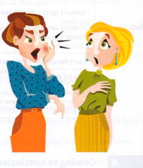

Exercises
4.1 Put the expressions in the box into pairs that mean more or less the same.
4.2 Complete each of these idioms.
- Ethan has had it up to ................................................................ with his work.
- It's horrible living with two people who are not on speaking ................................................................ .
- It'll really put the ................................................................ among the pigeons if you try to bring that
up at the meeting. - My sister ................................................................ spare when she found out I'd burnt her new top.
- Joel is ................................................................ your blood now he knows it was you who told the
police. - The demonstrators are furious and ................................................................ for blood.
- Your father will throw a ................................................................ if you go out dressed like that.
- The baby hardly sleeps at night and her mother is at her ................................................................ end.
4.3 Correct eight mistakes in this paragraph.
Yesterday I had terrible toothache. It hurt a lot and I guess that's why I was in a bad temper all day. Everything anyone said seemed to put the back up and, in the end, I threw a fuse with the person I share my office with. Even when I'm in a good mood, she sends me up the twist with her constant chatter and yesterday I had had it off to here with her after only ten minutes. I really gave her an eyeful and the result is that we are no longer in speaking terms. I know I'll have to apologise for doing my nuts like that, but perhaps I'll wait a while. It's much easier to work when she isn't talking to me! Perhaps I should give her a peace of my mind more often.

4.4 Answer these questions.
- Name one thing that drives you up the wall.
- Find two idioms on the left-hand page that conjure up images of birds.
- Can you remember a teacher ever going off the deep end? If so, what caused it?
- Find seven idioms on the left-hand page that are based on parts of the body.
- Has anyone recently rubbed you up the wrong way? If so, how did they do this?
- Which idiom in A on the left-hand page do you think is usually accompanied by a gesture?
- Have you ever given someone a piece of your mind? If so, what about?
- Find an idiom on the left-hand page connected with electricity.
Think about a situation you have experienced in which someone became angry. What idioms from this unit can you use to describe what happened?